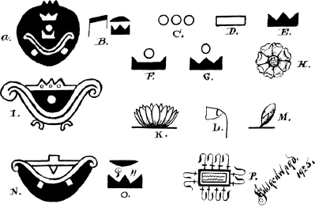
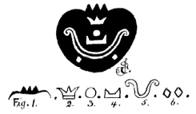

IV. BÖLÜM
GÜNEŞ İMPARATORLUĞU MU
Eskileri araştıran çoğu kişi, antik kral ve imparatorların “Güneşin Oğlu” unvanını aldıklarına dikkat etmiştir. Yine de kimse, bu hükümdarların gökteki kürenin oğulları olduklarını iddia ettikleri varsayımı haricinde, aynı unvanı almalarının sebebini açıklayamıyor.
Mu Kraliyet Arması
Bu unvanın alınmasının gerçek sebebini bulmak için dünyanın ilk krallığı ya da imparatorluğunun, yani Güneş İmparatorluğu’nun zamanına dönmemiz gerekli. Bu imparatorluk insanoğlunun anayurdunda kurulmuştu ve kendi armasına sahipti.
MU KRALİYET ARMASI
Güneş İmparatorluğu Mu’nun Kraliyet Arması rast gele oluşturulmuş değildi, deşifre ve tercümelerin de göstereceği gibi her üzerindeki her çizginin ayrı bir anlamı vardı.
Bu kalkanın şekli Mu hiyeratik alfabesindeki harflerden biri olan M şeklinde. Bu, ülkenin sembolik harfi olmak dışında aynı zamanda gerçek adıydı, zira M harfi, Mu dilinde “Mu” ve “Moo” şeklinde telaffuz ediliyordu.
Bu hiyeroglif armanın merkezini oluşturuyor ve yazılışı U-Luumil (Oo-loo-oomil), tercümesi ise “İmparatorluğu.”
Motifi kuşatan çember, güneşin bir resmi; dolayısıyla bu bileşik sembolün anlamı “Güneş İmparatorluğu.” Kalkanın eklenmesi ile bu “Güneş İmparatorluğu Mu” hâlini alıyor.
Güneşin sekiz ışını ana ve ara yönleri temsil ediyor ve bu ülkenin tüm dünyaya hâkim olduğunu gösteriyor.
Işınları kuşatan çember evrenin bir sembolü. İnsana uygulanmış bu evren, insanın evreni, yani dünya. Dolayısıyla onun ışığı ve etkisinin tüm insanlığa yayıldığı bir kez daha belirtilmiş oluyor.
Böylece Mu kraliyet arması bize, dünya üzerindeki tüm insanların onun yönetimi altında olduğunu anlatıyor. Mu, tüm dünyanın efendisiydi. Bu bilgi, Mu’nun “Hükümdar” olarak anıldığı Codex Cortesianus ile de doğrulanıyor. Gelenekler, Mu bir imparatorluk hâlini aldığında başrahibin hükümdar olarak seçildiğini söylüyor. Başrahip dini öğretilerde Tanrı’yı temsil ediyordu. Ra adı verilen güneş, Tanrı’yı simgeleyen kolektif ve en önemli semboldü. Dolayısıyla güneş, “Kralların Kralı”nın sembolüydü. Kral olarak seçilen başrahip, kralın simgesi olan Ra -güneş- unvanını alırdı. Bu unvana ülkenin adı eklenirdi, yani kralın tam unvanı Ra Mu, yani Güneş Mu idi.
Böylece ülkeye yeni bir isim daha eklendi ve ülke “Güneş İmparatorluğu” adını aldı. Güneş İmparatorluğu’nun ne zaman kurulduğu bilinmiyor. Onun yönetimi altındaki imparatorluk ve kraliyetlerin izi 35 bin yıl önceye kadar sürülebiliyor, dolayısıyla Güneş İmparatorluğu’nun 35 bin yıldan çok daha eskiye dayandığı bilinse de ne kadar eskiye olduğunu kimse söyleyemez. Bu binlerce yıl olabileceği gibi, on binlerce yıl da olabilir. Bize bu konuda en ufak bir ipucu verecek hiçbir eski belge, yazıt veya gelenek bulunamadı.
Görünüşe göre Mu kolonileri, yeterince genişleyip kendilerini yönetecek hâle geldiğinde, imparatorluk veya krallıklar hâline geliyor, fakat anayurda bağlı kalmayı sürdürüyorlardı. Bu sayede tüm dünya, tek bir merkezden yönetilen büyük bir aile hâline geliyordu. Bir koloni, bir krallık veya imparatorluğa dönüştüğünde Mu hanedanının bir üyesi veya muhtemelen bu göreve atanmış biri ülkenin ilk kralı oluyordu. Bu göreve atandığında yeni kral Güneşin Oğlu unvanına hak kazanıyordu. Bu, onun gökteki Güneş’in oğlu olduğu anlamına gelmiyor; onun Güneş İmparatorluğu’nun Güneş Hanedanı’nın oğlu veya Güneş İmparatorluğu’nun Oğlu olduğunu gösteriyordu. Yeni kralın arması da güneşti, fakat kralın anayurda bağlı veya onun bir parçası olduğunu belirtmek için kürenin yalnızca yarısı ufkun üzerinde, ışıklar saçar hâlde betimleniyordu.

Antik yazı ve kayıtlarda kullanılan, Mu ile ilgili semboller
Antik Hintli tarihçi Valmiki, Mayaların Hindistan’daki çalışmalarından bahsederken şöyle diyor: “Güneş ufkun üzerine yükselmeden önce.” Yani, Hindistan kolonisi bir imparatorluğa dönüşmeden önce.
Deccan, Hindistan’daki Maya kolonisi bir krallığa dönüştüğünde ilk kral Ra Ma adını almıştı. Arması yalnızca yarısı ufkun üzerinde gösterilen doğan güneşti. O da Güneşin Oğlu unvanını almıştı.
Udipoor’un şimdiki mihracesinin Ra Ma’nın soyundan geldiği söylenir. Eğer bu doğruysa, ataları 30 bin yıldan daha uzun bir zaman öncenin krallarıydı. Bu durumda şüphesiz dünyanın en eski hanedanına ait oluyor. Doğan güneş günümüzde de çeşitli ülkelerin bayraklarında görülüyor. Bunların arasında Japonya, Pers (Eski İran) ve bazı Orta Amerika cumhuriyetleri de var.
Eskiler, doğan ve batan güneşleri ayırt etmek için; doğan güneşi ışınlarıyla beraber, batan güneşiyse ışıksız, yalın bir disk veya küre biçiminde resmederlerdi. Güneş İmparatorluğu vakitsiz bir sonla karşılaştıktan sonra, anayurtla ilgili konularda güneş hep batan hâliyle gösterildi.

Antik yazılarda kullanılan Mu ile ilgili semboller
A. Bu Mu’nun, yani Batı Toprakları’nın batışını anlatan bir Maya deseni.
Deşifre ve Tercümeler: 1. Şekil. Sembolün üzerindeki üç uç, Mu’nun sembolik rakamına işaret ediyor, dolayısıyla bu şeklin altında yer alanlar Mu hakkında.
2. Şekil. Üç uçlu taç, Güneş İmparatorluğu Mu’nun imparatorluk tacı.
3. Şekil. Işık saçmayan güneş, Mu’nun karanlık bölgede olduğunu gösteriyor.
4. Şekil. Bu şekil Mu’yu batmış ve karanlıklar içinde resmediyor; “yalnızca zirveler veya uçlar görünüyor.”
5. Şekil. Bu, çukur, havuz veya derinlik anlamına gelen eski bir sembol.
6. Şekil. Bunlar, Mu ile beraber ateş çukuruna çekilen diğer iki Batı Toprağı’nı simgeliyor.
Serbest okuma: “Güneş İmparatorluğu Mu bir uçuruma düştü; artık güneş tarafından aydınlatılmadığı karanlık bir bölgede. Diğer Batı Toprakları da onunla beraber söndü. Onun tacı artık dünyayı yönetmiyor.” Hiyeroglifin kendisi de alışıldık uçurum formunda tasvir edilmiş.
B. Hiyeratik yazıda “Mu, Batı Toprakları” anlamına geliyor.
C. Anayurt’un rakamı olan üç. Ülkenin rakamsal sembolü.
D. Anayurt alfabesindeki hiyeratik M harfi. Aynı zamanda bir geometrik şekil. Bu, Mu’nun hem alfabetik hem geometrik sembolüydü.
E. Üç uçlu bu geometrik şekil, Mu’nun coğrafi konumunu gösteren sembolüydü.
F. Mu’nun, sulara gömülmesinden sonra kullanılan sembolü.
G. F ile aynı anlamda. Bazen biri, bazen diğeri kullanılırdı.
H. Klasik şekliyle bir lotus. Mu’nun sembolik çiçeği.
I. Batı Toprakları’nın batışını anlatan bir Maya deseni.
K. Mu’yu temsil eden başka bir lotus çizimi.
L. Kapanmış ve ölü bir lotus. Mu’nun artık var olmadığını temsil ediyor.
M. Süs amaçlı kullanılan bir lotus filizi.
N. Kui diyarının batışını anlatan bir Maya deseni.
O. “Kui Diyarı” anlamına gelen hiyeratik bir yazı. P. Mu’nun yıkımını temsil eden bir Mısır deseni.